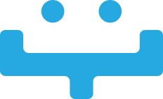

Institucional
Quem Somos
Somos a oLyA: robótica aplicada para pequenas empresas, laboratórios e instituições de ensino. Nossa história, o que nos move e como trabalhamos.

Nossa história
A oLyA nasceu na robótica educacional, do compromisso de democratizar o acesso à educação tecnológica no Brasil. Foi ali que aprendemos a traduzir tecnologia do jeito mais humano possível: montando, desmontando e entendendo.
Hoje levamos a mesma prática para dentro das empresas. Fornecemos o quadrúpede Unitree Go2 Pro e plataformas de P&D para pequenas indústrias, prestadoras de manutenção, empresas de inspeção e laboratórios de pesquisa — em venda ou locação por período.
A linha educacional continua no catálogo, para escolas, institutos e cursos técnicos. Rigor técnico onde o cliente precisa de laudo e especificação; sensibilidade pedagógica onde ele precisa de aula.
A marca
oLyA robótica é mais que uma ferramenta; é uma solução de aprendizado contemporâneo, que extrapola a sala de aula e as padronizadas cadeiras em fila indiana.
Nossa marca acredita no aprendizado com dois “e”: mais do que “decorar” um conteúdo, o estudante “apreende” o contexto e descobre que o mundo não é estático, mas um processo em constante transformação e construção.
Somos uma marca que expande o conceito de robótica educacional e, sobretudo, que acredita que todo aprendizado começa com um olhar curioso — o mesmo olhar que inspirou os olhinhos do pequeno robô que dá vida à nossa logo.

Missão, visão e valores
Missão
Colocar robótica para trabalhar onde ela resolve um problema real — na manutenção de uma empresa pequena, na bancada de um laboratório ou na sala de aula — com especificação honesta e suporte em português.
Visão
Ser a referência brasileira em robótica aplicada de pequeno porte: a empresa que um negócio de dez pessoas procura quando precisa de um robô, e não de um projeto.
Valores
Ética e transparência nas relações. Compromisso com a qualidade e a inovação. Dizer o que o equipamento não faz. Respeito aos parceiros e clientes.
Atuação nacional
A oLyA atua em todo o território nacional, atendendo pequenas empresas, laboratórios de pesquisa, instituições de ensino públicas e privadas e órgãos públicos.
Nossa estrutura permite atender às demandas de diferentes regiões do país, com logística adequada para entrega de equipamentos e suporte técnico remoto e presencial quando necessário.
Trabalhamos junto com quem opera — equipe de manutenção, engenharia, pesquisa ou coordenação pedagógica —, compreendendo a particularidade de cada contexto para oferecer a solução adequada.
Presença nacional
- Atendimento a todas as regiões do Brasil
- Suporte técnico remoto e presencial
- Logística adequada para entrega nacional
- Parcerias com empresas e instituições em diversos estados
Compromisso com quem coloca o robô para trabalhar
Robótica só vale quando resolve um problema concreto: uma ronda que ninguém quer fazer a pé, um algoritmo que precisa de hardware real, uma turma que precisa ver a máquina andar.
Nosso compromisso vai além de entregar o equipamento. Treinamos quem vai operar, damos suporte em português e ficamos disponíveis durante o contrato — de venda ou de locação.
E dizemos antes o que o robô não faz. Uma especificação honesta vale mais do que uma venda a mais.